这里我们将以制作一个小球滚动的游戏为例，以快速熟悉Unity的常用界面操作概念、入门Unity。
前言
游戏构思很简单，在一个平面内，通过键盘操作小球滚动击中上面的立方体以获得分数并显示在左上角。当玩家击中全部的立方体之后，跳转到另一个界面提示游戏完成，玩家胜利，并附有重新开始游戏的按钮。
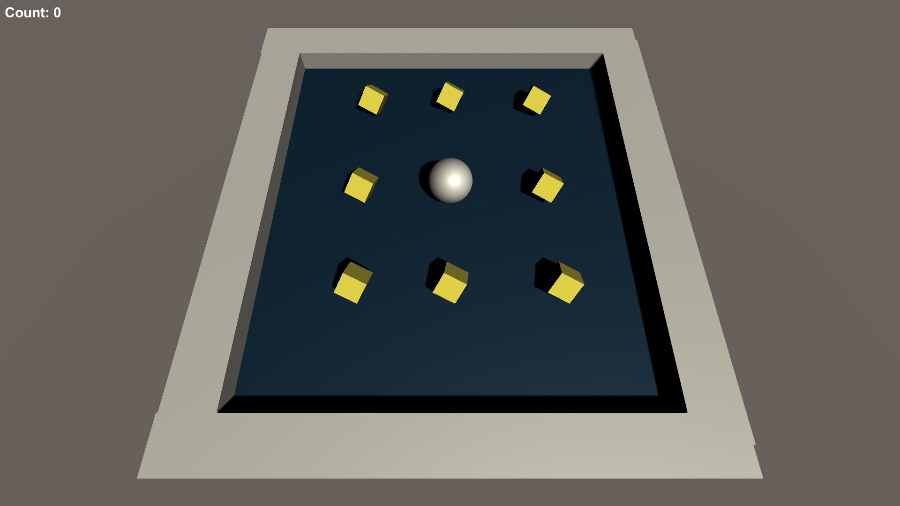
通过这个学习，你将会主要掌握：
- Unity中一些基本知识
- 常用组件的控制（移动、旋转、设定颜色及材质）
- 摄像机的简单跟踪
- 简单碰撞判断原理
注意：
- 本文需要基本C#语言基础，如果你没有学习过这门语言可以事先学习一下再开始这个教程。别担心，很简单
- 本文基于Unity 2019.3.0f6 ，外部代码编辑器为 Visual Studio 2019
让我们开始吧！
Unity中的一些基本知识
概念
Game Object 游戏对象
Game Object是搭建游戏的最基础的模块，但是任何一个Game Object本身并没有任何作用，其属性以及行为都由这个Game Object所拥有的Components决定
Components 元件
Components从属于Game Object，从而定义了每一个Game Object应该表现哪些行为以及拥有哪些属性
Prefabs 预设体
有些Game Object我们以后可能会经常用到（比如游戏中的墙），如果我们为其设置好了很多Components以及其对应的值，后期需要更改属性的时候，我们肯定不希望每一面墙都重新添加一遍这些Components或重新设置参数值，那么此时我们就可以将一些Game Objects保存成为Prefabs，下次用到可以拿来即用，因为Prefabs可以生成很多的同样的Game Object
Prefabs之于Game Object相当于编程中的类之于对象
因而当我们需要生成一个Game Object时，只需要将Project窗口中的相应Prefab拖动到Hierarchy窗口即可完成实例化，生成一个Game Object。（界面视图介绍详见后文）
Assets 资产
Assects可以是3D models（3D模型）、audio files（音频文件）、scripts（脚本）等等。（显然，Prefabs也是一种assets）这些资产可以看成是游戏的原材料，构成了我们的游戏
界面
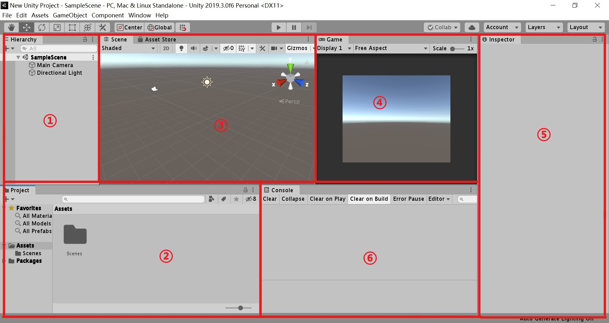
①Hierarchy 层次管理器
管理各个Game Object的层次结构
②Project 工程管理器
管理当前工程的Assets
③Scene 场景视图
通过Scene视图对整个游戏的所有Game Object（如地图、道具、角色等）进行一些操作，比如拖动任何一个可动的元素，调整其位置角度大小；改变观看这个世界的角度、远近等。称这个模式为Edit模式。
④Game 游戏视图
Game窗口所展示的内容即玩家看到的内容，因而尽管我们可以在Scene窗口中随意变化观察的角度，但是Game窗口的内容却只取决于Camera所看到的内容。
同时如果运行游戏的话还可以在Game窗口中直接“玩”我们的游戏，从而达到调试的目的。
⑤Inspector 属性
列出了所选中的Game Object的所有Components，这里可以对它们进行管理并且更改参数值
⑥Console 终端
控制台所打印的信息，可以用来调试C#脚本或者其他内容
你的视图可能与截图有所不同，这里仅仅以我们所常用的视图结构为例
正式开始
前面我们已经简单介绍了Unity的一些基本概念，这里我们将正式开始游戏的制作
打开Unity，新建一个3D工程。我们会看到Unity已经事先为我们新建了两个Game Object: Main Camera和Directional Light，保留它们，后文将会用到
然后在Project窗口，新建以下文件夹为后续工作准备：Materials, Prefabs, Scenes, Scripts
至此，你的层次结构和工程资产应该如下：
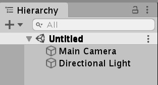
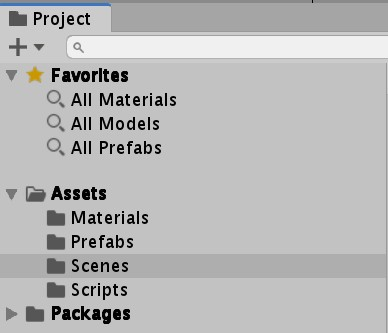
添加&设置游戏对象
地面
Hierarchy窗口，右键，3D Object，Plane
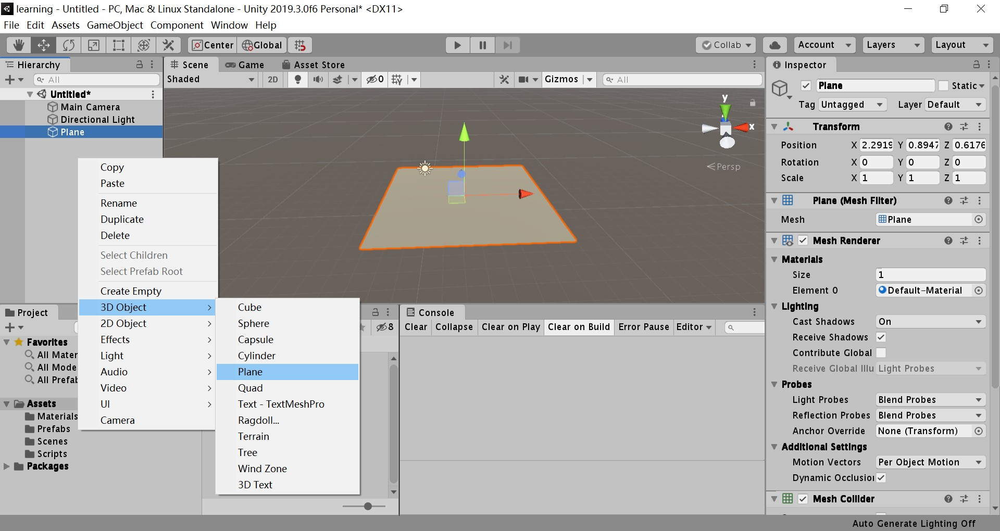
然后在Inspector窗口将Plane重命名为Ground，在Transform选项卡中，点选项卡的右上角省略号，Reset，重置平面的位置及大小
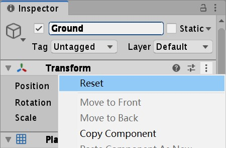
接下来，我们要为地面添加材质颜色
在Project窗口中，进入Materials文件夹，右键，Create，Material，这时会生成一个材质球并等待命名，我们将它命名为background。然后在Inspector中将Albedo（反射率）设成自己喜欢的颜色（这里以RGB（0,32,64）为例），然后将材质球拖动到Scene窗口的Ground对象上以将材质球应用。
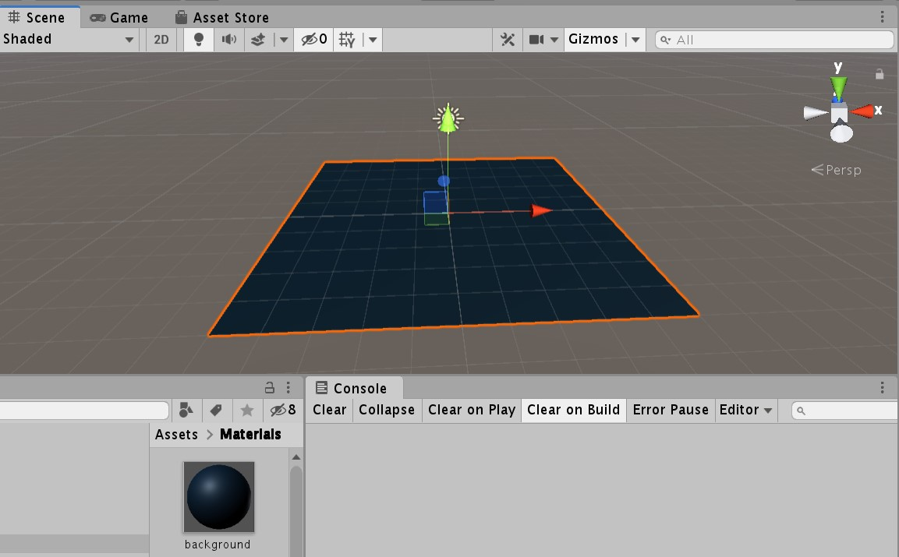
球
Hierarchy窗口，右键，3D Object，Sphere
然后在Inspector窗口将Sphere重命名为Player，在Transform选项卡中，点选项卡的右上角省略号，Reset，重置平面的位置及大小，然后将Position属性的Y设置为0.5
因为小球会遇到碰撞等事件，为了模拟物理属性，我们需要为其添加相应的Components。在Inspector窗口，点击最底部的Add Component，输入Rigidbody以添加
墙
正如最终游戏截图所示，我们计划在平面四周各建立墙体以防止玩家的小球脱离平面坠落。当然你也可以跳过这一步，如果你想让游戏更惊险刺激。但在这里我们将会使用Prefab进行建造，后文也将用到这一重要概念，因此我们强烈建议你不要跳过
Hierarchy窗口，右键，3D Object，Create Empty，创建一个空的Game Object，用以当作墙体集合，重命名为Walls，然后在Walls对象上右键，3D Object，Cube，在Inspector窗口调整大小以符合地面边长并重命名为wall，这样wall就成为了Walls的子对象
然后将wall拖动到Project窗口的Prefabs文件夹，将会自动创建wall对象的prefab，同时wall对象会变成蓝色，证明创建成功
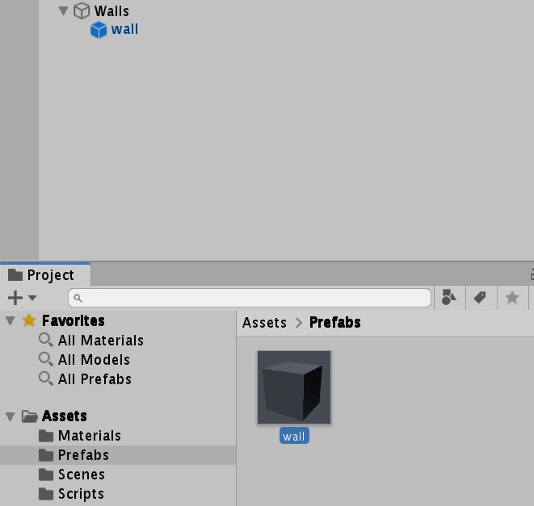
Ctrl+D快速复制出剩余三个墙体并移动摆放好位置
立方体
立方体与墙体构造方法类似。先创建一个空对象，命名为Cubes作为集合。然后在其中新建Cube，命名为cube，拖动到Project窗口的Prefab文件夹以生成预设体。然后Ctrl+D快速复制若干个立方体并摆好位置
为了美观，我们可以为立方体们设置材质颜色。在Materials文件夹内新建材质命名为cube，设置Albedo为你喜欢的颜色（这里随机以黄色为例）。因为我们使用预制体构建，所以上色十分方便。只要在Project窗口中选中cube预制体，双击进入编辑模式，将材质球拖动到预制体上即可。
如游戏设计思路所言，我们需要控制小球击中立方体以获得分数，因此我们也要像小球一样，为立方体设置刚体的物理属性。在Inspector窗口，点击最底部的Add Component，输入Rigidbody，为cube预制体添加刚体属性
然后点击Scene导航条的Scenes场景退出编辑模式，然后我们会发现所有立方体已经成功添加了材质球和刚体属性
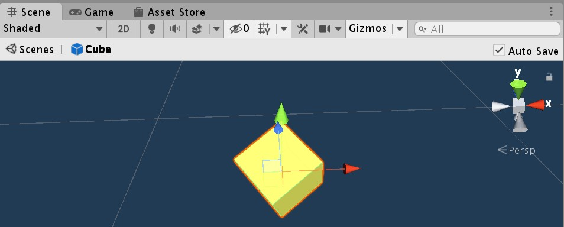
到这里，我们已经完成了游戏所需要的所有Game Object的添加和设置工作。
代码，魔法
试着运行一下游戏，很好，所有的对象都出现在Game窗口里，但无法使用键盘控制小球移动。接下来我们需要添加一些代码来实现这个目标。
球的移动
我们在Scripts文件夹下来管理代码，在该目录处右键，Create，C# Script创建一个脚本并命名为PlayerController。然后我们需要将这个脚本与小球Player关联起来。选择Player，在Inspector面板下选择Add Component，在其中搜索我们的脚本名字就可以找到该脚本完成绑定。
双击脚本文件，自动调用外部编辑器打开（推荐使用Visual Studio，这里以2019版本为例）
1 | using System.Collections; |
Unity已经为我们预置好了脚本的结构，最基本的，我们可以看到所有的Unity脚本都继承自MonoBehaviour类，然后有两个预设函数，Start函数是在第一帧开始渲染前调用，Update函数在每一帧刷新前调用，都是非常常用的函数
接下来思考我们要做的事情，我们需要检测用户的输入，并且通过输入的按键来控制小球的滚动方向，检测用户的输入同时也需要识别输入的是哪一个按键，除此之外我们还需要一些物理学有关的逻辑，比如我们需要添加一个力来控制小球的移动，这就是物理学逻辑，这些逻辑当然是每一帧都要进行一次，所以我们需要将这些逻辑写在每一帧更新都要执行的函数中
显然我们可以写到Update函数下，因为Update函数是每一帧刷新前都会调用的，同时我们还有另外的选择，即使用FixedUpdate函数，它在每一次进行物理学运算的时候调用，每次检测到用户输入都需要进行物理学运算，所以我们可以将逻辑写到FixedUpdate函数下
首先我们需要创建一个对于这个Player小球的引用，这样才能知道我们控制的是哪个小球，这里小球是刚体，所以我们创建一个刚体（Rigidbody）的引用，并且需要在第一帧开始渲染之前通过GetComponent方法来找到小球创建刚体的引用，这一逻辑自然就需要写到Start函数中了
1 | private Rigidbody rigidbodyPlayer; |
接下来对用户输入的读取就需要写到FiexedUpdate函数中了，我们使用Input类的GetAxis方法来获取水平或者垂直的运动轴，这个方法会返回一个float值作为该轴的移动距离
1 | float moveHorizontal = Input.GetAxis("Horizontal"); |
通过以上两行代码我们就可以将用户的W，S，A，D输入转化为水平轴和垂直轴的移动距离，分别存储在moveHorizontal和moveVertical两个float类型的变量中
接下来通过Rigidbody类的AddForce方法可以为刚体添加作用力，AddForce方法接受一个三维向量（Vector3）参数，这个三维向量就可以表示力，显然我们的三维向量可以用刚才的moveHorizontal和moveVertical两个变量作为X值和Z值，同时我们是不需要小球在Y方向上移动的，也就是将Y方向的力作用设置为0.0f即可，经过调试我们会发现小球的移动速度过慢，为了方便调节小球的速度，只需要在表示力的三维向量前乘以一个倍数即可，为了方便调整，我们设置一个public的float类型的变量speed来调节这个乘积
另外，凡在Unity的脚本中被声明为public类型的变量，在Unity的Inspector界面中的该脚本的Component下都会出现一个可以设置的值的方框
1 | public float speed; |
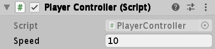
这里我们将speed的值设为10，运行游戏就会发现通过W，S，A，D的控制，小球动了起来
摄像机的跟踪
可以发现，我们的Camera的角度和位置都比较刁钻，这导致我们的游戏看到的画面并不完整，接下来我们对Camera进行设置，使其能够跟随我们的小球滚动来同时移动
首先调节Main Camera的Position和Rotation使得画面和角度比较合适
接下来通过脚本控制Main Camera跟随小球Player一同移动，即在Position上保持相对静止
可能你会想到，只需要将Main Camera拖动给Player使其成为Player的子物体不就可以保持两者相对位置不变化了吗？但是问题在于球体Player是滚动的，如果两者的位置完全相对静止，就会导致球滚动时Main Camera也会跟着球滚动，产生天旋地转的感觉。
新建脚本CameraController并添加给Main Camera做一个Component。为了使Main Camera的Transform的Position和Player的保持相对静止，Rotation并不和其保持一致，可以想到一个办法：设置一个偏移量，这个值初始化为游戏开始时Main Camera和Player之间的Position的差值，然后在球滚动时，每一次滚动都改变Main Cmaera的Position，使其新的Position等于现在球的Position的值加上刚才的偏移量，这样就会在每次球的位置改变时Main Camera都会跟上它的步骤
显然，偏移量的设置需要在Start函数中完成，每一次球的位置发生变化时的逻辑可以在Update函数中完成，但还有一个更好的选择，就是LateUpdate函数，该函数在每次有GameObject发生变动时才会调用。同时，我们的脚本使加在Main Camera上的，所以Main Camera的Transform可以直接调用，但是球的Transform则需要单独获取，这里我们设置一个public的GameObject量，然后在Unity中将球Player拖动到这个量处作为参数即可
1 | private Vector3 offset; |
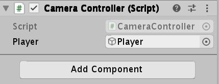
这时候运行游戏就可以发现Main Camera的位置随着球的改变而发生了改变
立方体的旋转
我们已经在地面上放置了若干个立方体，为了增强视觉效果可以让它们原地缓缓旋转。当然你也可以跳过这一小节。
新建脚本Rotator，并添加给预设体cube，编辑此脚本。这个逻辑中是不需要Start函数的，我们只需要每一帧都让小方块儿转动一下，所以将逻辑写到Update函数中，这里使用Ratate方法，需要一个Vector3作为参数。为了不让旋转过快，我们给每一帧都乘以一个小的时间量
1 | private Vector3 rotation = new Vector3(15,30,45); |
保存脚本，运行游戏可以看到小方块旋转起来了。
碰撞
如果小球碰撞了旋转的立方体，那么立方体就会消失。那么如何识别我们的小球Player碰撞的是立方体呢？我们通过为预设体cube添加特定的标签来识别。在Assets的Prefabs中找到我们的cube并打开它，可以在它的Inspector面板中发现它还没有添加标签（Untagged），点击Tag后的按钮选择Add Tag…，来添加一个名为cube的标签，然后再回到最开始的面板处选择新添加的这个标签，这样cube的标签就添加好了。

重新打开PlayerController脚本，这里我们将碰撞发生的逻辑写到函数OnTriggerEnter中，这个函数在发生碰撞事件的时候调用，而且用碰到的Collider（碰撞机）作为参数，也就是我们的Player碰到的Collider。可见，如果要检测到的碰撞，被碰撞的物体需要由碰撞引擎，也就是要有Collider的属性，其实我们会发现，作为cube保存的一个Prefab在创建之初就已经有Box Collider的这一Component了，所以不再需要我们自己添加。
但是我们需要勾选上Is Trigger选项
这里的原因需要我们了解一定的Unity碰撞原理。Unity将Collider（碰撞机）分为静态碰撞机（Static Collider）和动态碰撞机（Dynamic Collider）两种。
静态的碰撞机比如墙面、地板等一些列静态的物体，与他们碰撞时，不允许两个Collider相互重合，也就是说会发生反弹。
而为了让我们的碰撞能够实现（碰撞后立方体消失），我们需要将立方体设置为动态的（Trigger）触发器，成为Trigger的Collider是可以被穿过的，这样才会引发我们的“碰撞事件”的逻辑。这里我们找到预设体cube，在它的Box Collider的Component中，勾选Is Trigger选项，这样它就成为了一个动态触发器。
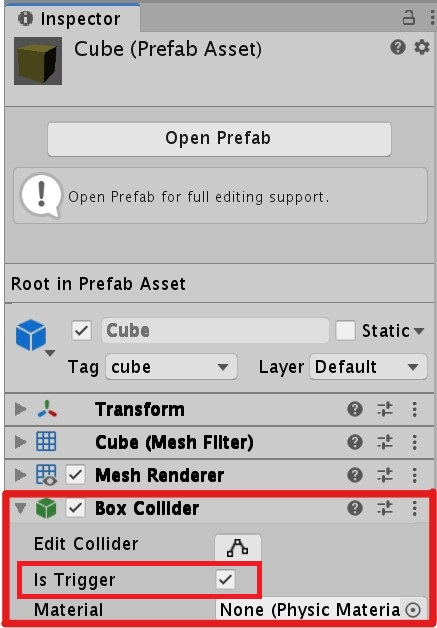
OnTriggerEnter函数用其碰撞到的Collider作为参数，现在就需要我们识别这个碰到的Collider是不是一个cube立方体了，显然可以使用Tag来鉴别。这里使用gameObject的CompareTag方法来完成。该方法以一个字符串作为参数，返回一个布尔值，如果gameObject的Tag和字符串一致，就返回true。
接下来完成控制小立方体消失的逻辑，使用gameObject的方法SetActive来完成。这个方法接受一个布尔值作为参数来控制GameObject的消失与显现。作用同我们在Inspector面板中看到的每一个GameObject前的小对勾相同。
1 | void OnTriggerEnter(Collider other) |
计数器
接下来添加一个计数器，每撞到一个小球就使计数器数值增加1。自然需要编辑PlayerController脚本，声明一个int类型的变量，在Start函数中初始化为0，在每一次碰撞到小立方体后都增加一。这里特地将count每次更新后的值都打印到控制台来验证其正确性。
1 | private int count; |
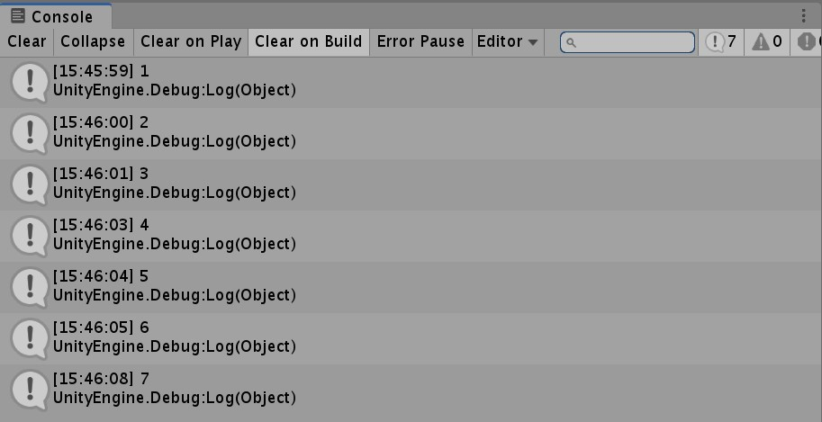
但显然，将分数显示在游戏界面中才是更好的选择，这里需要用到UI组件。
在Hierarchy窗口中，右键，UI，Text，就会创建一个UI组件，但是我们会发现其实Text外还有一层Canvas（画布），下方还出现了一个EventSystem，这些都是Unity为我们自动创建的，这是因为：
The single most important thing to know about these additional items is that all UI elements must be the child of a canvas to behave correctly.
（所有的UI元素都必须是一个Canvas（画布）的子元素才能正常工作）
这里将Text命名为CountText。接下来我们来调整它的位置。
找到Inspecctor的Rect Transform，可以看到UI的Transform和一般GameObject的定位方式不同，这个位置的确定是相对于游戏屏幕的，点击左边的这个方框，展开位置选择的面板，根据提示：按住Shift键选择中心轴（pivot），按住Alt键选择位置（position）。我们选择同时按住Shift和Alt键，将Text放到Canvas的左上角：
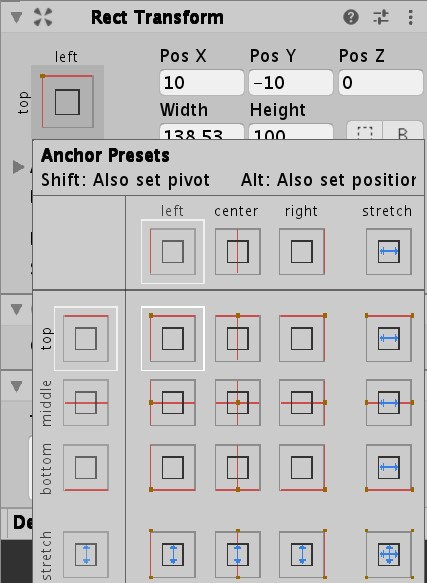
这样就可以看到Count Text放置到了Game窗口的左上角。接下来可以改变Rect Transform的Pos X的值和Pos Y的值让Count Text稍微离左边缘和顶部边缘一段距离
接下来要将分数显示到Text中，继续编辑PlayerController脚本，首先需要添加新的Namespace：
1 | using UnityEngine.UI; |
然后自然需要创建一个Text变量来表示CountText的一个引用，我们将此Text变量声明为public的类型，为了可以在Inspector中对其进行直接的赋值。接下来要初始化CountText中所显示的文字，使用Text的text变量即可，在Start函数中进行初始化，然后再每一次碰撞到小立方体的时候再重新更新Text的内容
1 | public Text countText; |
保存脚本回到Unity，将CountText拖动到Inspector中新产生的这个Text变量处来实例化它即可。
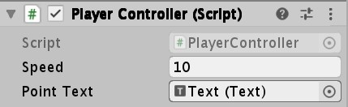
运行游戏，很好！
至此，游戏的主体部分已经完成。但按照最初的游戏设想，在完成游戏后会跳转到另一个界面提示游戏完成，玩家胜利，并附有重新开始游戏的按钮。让我们继续！
最后的胜利
在Project的Scene文件下，右键，Create，Scene，并命名为Finish。这将创建一个新的场景。（你同时也可以将之前我们所进行的一系列操作的场景在Assets中找到并移动到Scene文件中方便管理）
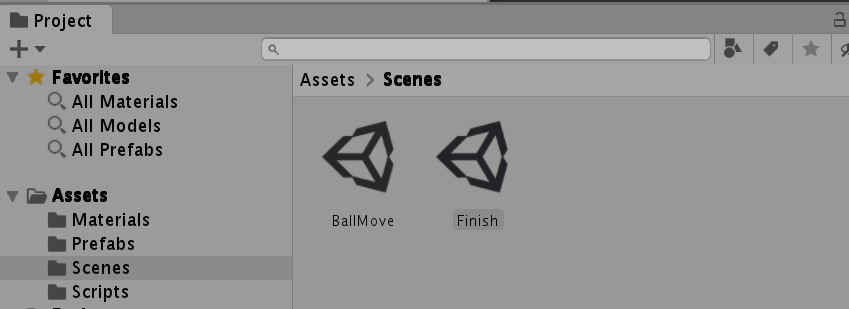
然后我们需要将新场景添加到构建列表中。点击菜单File，Build Settings，添加我们的两个场景。
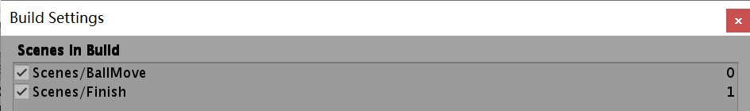
双击finish打开场景编辑。在Hierarchy窗口中，右键，UI，分别创建一个Text和Button。调整好颜色和位置。值得注意的是，按钮的文本内容位于Button的子对象中，需要对其的Inspector中属性进行调整以调整按钮的文本。
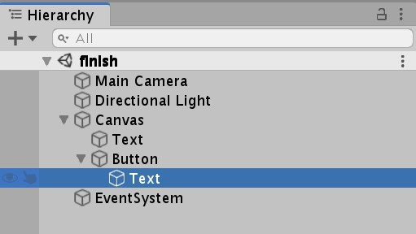
我们可以在Button的Inspector窗口的Button选项卡中更改按钮的外观细节。
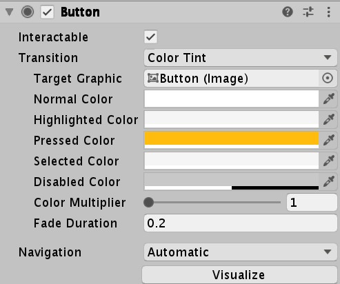
接下来需要对原来的PlayController脚本进行小修改。在满足玩家将所有立方体都撞击的条件后（即分数point等于满分，比如这里因为共设置了8个立方体，每个立方体分数均为1分，所以总分为8分），跳转到我们新建的用于显示游戏胜利信息的新场景。跳转场景需要我们引入新的命名空间
1 | using UnityEngine.SceneManagement; |
然后我们需要修改OnTriggerEnter函数内容。
1 | void OnTriggerEnter(Collider other) |
试着运行一下游戏，到这里我们已经能完成游戏结束后从游戏场景跳转到Finish场景，接下来我们需要对Finish场景的按钮添加代码来跳转到游戏场景以实现重现开始
新建脚本PlayAgain，并添加给按钮，编辑此脚本。首先在我们需要在Start函数中添加一个按钮的监听器以监听按钮的点击事件，绑定一个自定义函数OnClick。然后添加自定义函数OnClick，在其中完成场景跳转功能。
1 | using UnityEngine; |
运行游戏，完美！
分享
至此游戏的制作大功告成。如果你想把自己的游戏分享给你的朋友，可以选择打包生成
点击菜单File，Build Settings，确认所有需要的场景均被勾选。在下面选择目标平台及相关设置，点击Build按钮即可
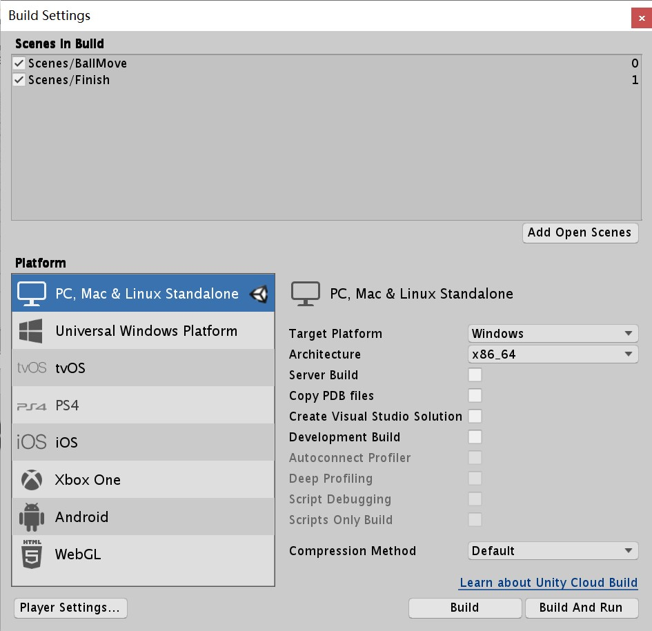
另附上游戏的完整工程文件，如果你中途遇到困难可供参考：BallMoveGame.zip